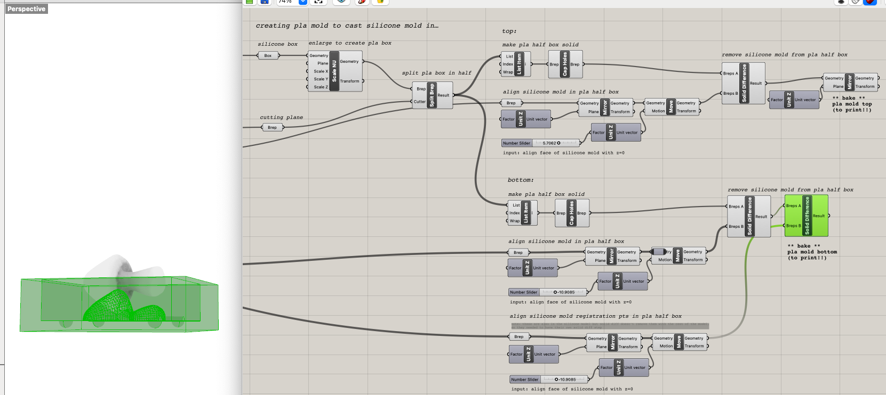
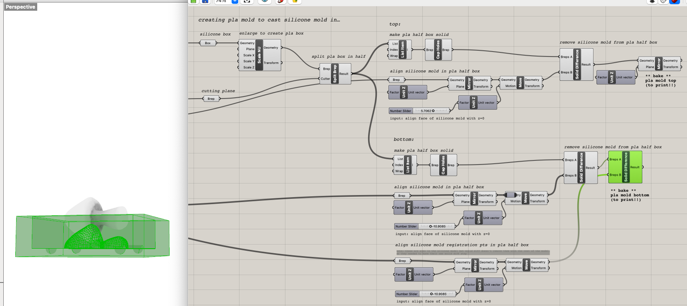
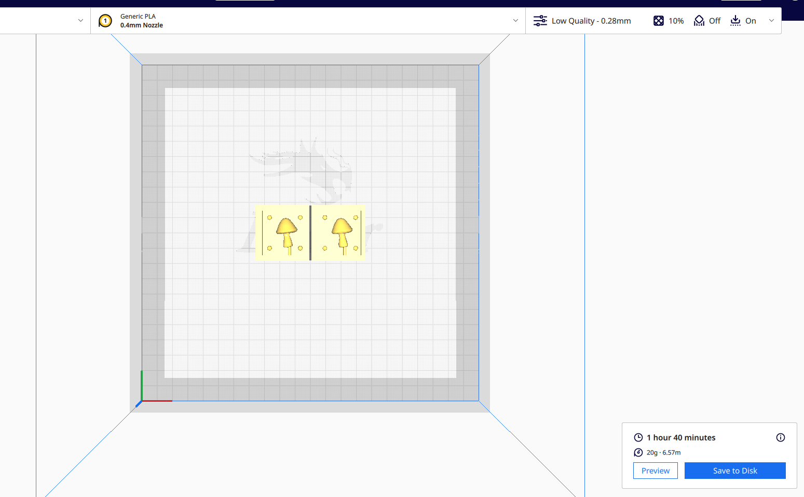

For this assignment, we needed to design and fabricate a 2-part silicone mold, then use that to cast at least 4 identical parts in plaster (or another material, i.e. ice, gelatin, resin).
This week, we needed to design the master part that would eventually be cast, the silicone mold, and the 3D-printed PLA mold to cast the silicone mold in. My brain is breaking just typing this.
I brainstormed via Pinterest board and decided I'd like to make a buncha cute lil shrooms since I'd given up on that concept for the lamp. I found a mushroom STL on CGTrader and got to work on modeling.
I was having trouble wrapping my head around creating a positive of a negative of a whatever, so I decided to start by modeling the silicone mold itself, then take the boolean difference of it to create the mold of the silicone mold that I would need to print. As evidenced in the lamp assignment, I like Grasshopper more, so I decided to go that route rather than building directly in Rhino. This may have caused me more pain than gain, but I learned a lot! And this was my very first Grasshopper definition that I wrote without following any sort of tutorial. Definitely a struggle at times...but in the end, it worked, and hey, I'm proud of it! I'll say it!
I still began in Rhino though, first importing the mushroom STL, resizing it to be waaay less mesh, rotating it to be horizontal along the x-axis, performing a draft angle analysis to find where to bisect it in the mold, and arranging that midway line at the origin. I then performed a quad remesh to make it an even less complicated mesh and transformed that mesh into a brep via meshtonurb so it'd be easier to work with in boolean operations. (Okay, this isn't at all what I did at first, I actually tried to use it as a mesh in Grasshopper and was stuck for days in mesh boolean difference bullshit land, then finally figured out that this was a better way. You can read about that mesh era in Discord if you want to witness my confusion.)

In Grasshopper, I pointed a brep towards the mushroom in Rhino, created a box around it, then constructed and arranged registration points (4 spheres), a pour vent (solid cylinder extending from the shroom stem to the edge of the box), and a cutting plane to use in later split operations.
I then split that box in half with the cutting plane and created the top and bottom halves of the silicone mold. For both, half of the shroom and the pour vent needed to be removed. For the top, the registration points needed to be removed, while for the bottom, they needed to be added, so that each side of the mold could lock into the other when the plaster is setting.


Aren't they cute?!
Then I needed to actually make the mold that I'd cast these in. To do so, I scaled up the original silicone mold box, split it in half, then aligned each half's silicone mold model to face the origin, and took the boolean difference of the silicone model from the larger half box. For the bottom half, I had to take a separate boolean difference with the registration points because of surface things. For the top half, I flipped it over just to avoid an extra rotational step in Cura later. I've commented what's happening at each step and where the baking needs to happen.
 

All together now!! The full set of what will exist in many a medium!
I exported the mold as an STL and tried slicing it in Cura and printing it, but I made it a liittle too small and still needed to acquire the silicone for the mold and material to cast in, so I decided to save that for the next phase of the assignment. Thus ends part one of molding! Next week I'll get crackin on casting the silicone mold and plaster shrooms.
I'll leave you with my full Grasshopper definition (which you can also view in the file below) just because I'm still so pleased that I finally got it to work. Hopefully I'll need to cast another mold someday and can reuse it...or a classmate can use it in their final project...anyone! Anything! Within reason. You can point to a brep centered at the origin in Rhino and adjust the number sliders to move the registration points and vent around. Regardless, I'm at least definitely using it for this project.
This week, we needed to *finish* designing and fabricating a 2-part silicone mold and use that mold to cast at least 4 identical parts in plaster (or another material).
Not gonna lie, I had some misadventures. I had the bright idea of casting in resin because I wanted sparkly lil gem shrooms, so I ordered a combo pack of some off-brand silicone and epoxy on Amazon...then the internet proceeded to target me with content on people having respiratory failure from working with resin, and I took that as a sign to return those immediately and buy the recommended materials for the class instead (OOMOO 30-1A:1B Mix by Volume Tin Cure Silicone Rubber and Perfect Cast Cast & Paint Harder Than Plaster Casting Material). Unfortunately, those didn't arrive until Saturday, and when I finally cast the silicone mold, the pour vent wasn't lined up. It took some hardcore staring into space to identify where I'd gone wrong in GH, but when I saw it, boy did I feel like a dummy. That final step to mirror across the z-axis that I thought just flipped the half mold so I wouldn't have to rotate it in Cura? Bad idea. That mirroring was mirroring the registration points (in retrospect, duh) so that the two exported mold halves no longer aligned, as they weren't perfectly symmetrical.

Once I fixed the GH script, I printed the new PLA mold version. You'll notice that the mushroom is also a little more centered and the registration points and pour vent are bigger than the final model I landed on last week, which was very easy to adjust (gh ftwwww). I then cast a new silicone mold by mixing equal parts A and B OOMOO, stirring vigorously for 3 min, pouring it into the PLA mold, and letting it cure for 6 hours. And it fit this time! WoooOo!


I also printed a spiralized outer contour to hold the mold upright while the plaster cured. Then I got impatient and didn't want to waste a bunch of plaster, so I printed another spiralized outer contour to see if I could also cast plaster in the imperfectly fitting silicone mold by shoving it into the holder and forcing the pour vent to align (and it actually did - you'll see!).
I placed the silicone molds with the pour vents facing up in the printed contours and secured the top with a rubber band. I then cast the mushies by combining 3 parts Perfect Cast with 1 part water, mixing the solution with purpose for 2 min, pouring it into the silicone mold pour vents (very messily), then letting them cure for 45 min. Over and over again.

I've made 7 in total so far. Are they flawless and perfectly identical? Of course not, you masochist. But their lil wrinkles and dips make them even more adorable and now I can hide teeny shrooms around my friends' homes like the sneaky woodland elf I was always destined to be. (Or make a bunch, paint em, and throw em in with music merch! Or both!)